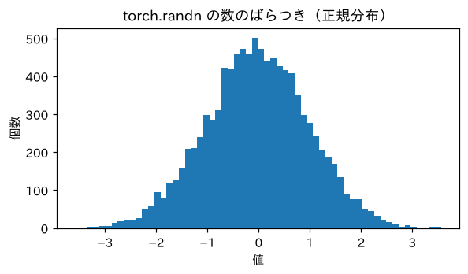
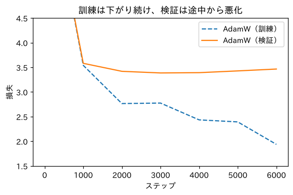
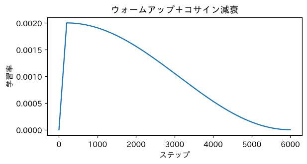
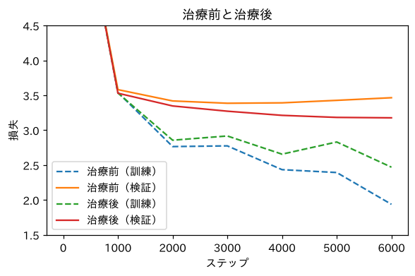

つくるもの 過学習を抑え、安定して学習する改良版MLPと、学習の「診察表」。モデルをGoogleドライブに保存する方法も
身につく数学・理論 平均・分散・標準偏差と正規分布 初期化：最初の損失は log V \log V log V 活性化の大きさが層を通るたびに暴れる問題（勾配消失・爆発） LayerNorm（層正規化） Adam / AdamW（慣性と、パラメータごとの歩幅） 過学習とドロップアウト・重み減衰 学習率のウォームアップとコサイン減衰 勾配クリッピング 新しく使うPython・PyTorch torch.randn と .mean() .std()model.train() と model.eval()torch.save / torch.loadgoogle.colab.drive でドライブに保存この章でつくるもの
第9章のMLPは、bigram の記録を破りましたが、途中から丸暗記（過学習 ） を始めていました。この章では、学習がうまくいかないときの「症状」と「治療法」をまとめて学びます。治療をすべて施した改良版MLP で、記録を 3.395 → 3.18 前後 まで伸ばします。ここで学ぶ技は、第13章のGPTでもそのまま使います。
ミナト
「学習のお医者さん」って、なんだか大げさですね。
ボンゴ先生
いや、大げさじゃない。ニューラルネットワークの学習は、とても繊細な生き物だ。熱が出たり（損失が爆発）、寝込んだり（損失が下がらない）、物覚えが良すぎて応用がきかなくなったり（過学習）する。プロの研究者も、時間の大半を「診察」に使っている。今日はキミに聴診器を渡そう。
準備
準備セル は第9章とほぼ同じです。モデルには、この章で学ぶ部品（LayerNorm と Dropout）をあらかじめ入れてあります。説明は後で出てくるので、今は貼り付けて実行してください。
コツ：2回に分けるときは
この章は長いので、「診察3：過学習」の手前で一度休むのがおすすめです。Colabは、しばらく放っておくとセッションが切れて、変数 （train や hist_a など）が全部消えます。2回目は、メニューの「ランタイム」→「前のセルを実行」などで、この準備セルから順に全部実行し直して から続きを読みましょう（CPUで10分ほどかかります）。
Python（Colabのセルに貼って実行） コピー
import re, math, urllib.request
import torch
import torch.nn as nn
import torch.nn.functional as F
def load_soseki (file_id="773_ruby_5968" ):
url = ("https://raw.githubusercontent.com/aozorahack/aozorabunko_text/master/"
f"cards/000148/files/{file_id}/{file_id}.txt" )
text = urllib.request.urlopen(url).read().decode("cp932" )
text = text.split("-------------------------------------------------------" )[2 ]
text = text.split("底本：" )[0 ]
text = re.sub(r"《.*?》" , "" , text)
text = re.sub(r"※?［＃.*?］" , "" , text)
text = text.replace("｜" , "" ).replace("\r\n" , "\n" )
text = re.sub(r"\n{3,}" , "\n\n" , text)
return text.strip()
text = load_soseki()
chars = sorted (set (text))
V = len (chars)
stoi = {ch: i for i, ch in enumerate (chars)}
itos = {i: ch for ch, i in stoi.items()}
data = torch.tensor([stoi[c] for c in text])
n = int (len (data) * 0.9 )
train_data, val_data = data[:n], data[n:]
T = 8
class MLP (nn.Module):
def __init__ (self , V, T, d=32 , H=256 , dropout=0.0 ):
super ().__init__()
self .emb = nn.Embedding(V, d)
self .fc1 = nn.Linear(T * d, H)
self .ln = nn.LayerNorm(H) # この章で学ぶ「層正規化」
self .drop = nn.Dropout(dropout) # この章で学ぶ「ドロップアウト」
self .fc2 = nn.Linear(H, V)
def forward (self , x):
e = self .emb(x)
h = torch.tanh(self .ln(self .fc1(e.view(len (x), -1 ))))
return self .fc2(self .drop(h))
val_X = torch.stack([val_data[i:i + T] for i in range (len (val_data) - T)])
val_Y = val_data[T:]
@torch.no_grad ()
def val_loss (model):
model.eval()
loss = F.cross_entropy(model(val_X), val_Y).item()
model.train()
return loss診察1：最初の損失を見る
学習を始める前に、まず 最初の損失 を見ます。何も学んでいないモデルは、全部の文字を同じくらいの確率 で選ぶはずなので、損失は log V \log V log V
Python（Colabのセルに貼って実行） コピー
torch.manual_seed(0 )
model = MLP(V, T)
x, y = val_X[:512 ], val_Y[:512 ]
print ("理想の最初の損失 log V：" , round (math.log(V), 3 ))
print ("このモデルの最初の損失：" , round (F.cross_entropy(model(x), y).item(), 3 ))
with torch.no_grad():
model.fc2.weight *= 30 # わざと出力層の重みを30倍にしてみる
print ("重みを30倍にしたら：" , round (F.cross_entropy(model(x), y).item(), 3 ))出力
理想の最初の損失 log V： 7.631
このモデルの最初の損失： 7.7
重みを30倍にしたら： 37.845重みを大きくしたら、最初の損失が30以上に跳ね上がりました。何も知らないくせに、点数（ロジット ）に大きな差をつけて「この文字に違いない！」と自信満々に間違えている 状態です。こうなると、学習の最初の時間を「自信過剰を直す」ことだけに使ってしまいます。
コツ：処方箋：最初の損失は log V の近くに
学習を始める前に、必ず最初の損失を print しましょう。log V \log V log V パラメータ の最初の値）がおかしいサインです。出力層の重みを小さめにしておくのが定石です。
確認問題 1 ：語彙数 V = 2061 V = 2061 V = 2061 log V ≈ 7.63 \log V \approx 7.63 log V ≈ 7.63 37.8 と極端に大きくなっていました。モデル内部で何が起きている可能性が最も高いですか？
自動採点・ヒント・解説の表示にはJavaScriptを有効にしてください。
統計の道具：平均・分散・標準偏差
初期化の話をもう少し深めるために、統計の道具を3つだけ用意します。
Python（Colabのセルに貼って実行） コピー
z = torch.randn(10000 ) # 「標準正規分布」から10000個の数を引く
print ("平均：" , round (z.mean().item(), 3 ))
print ("分散：" , round (z.var().item(), 3 ))
print ("標準偏差：" , round (z.std().item(), 3 ))出力
平均： -0.03
分散： 1.001
標準偏差： 1.001数学の道具箱：平均 $\mu$・分散 $\sigma^2$・標準偏差 $\sigma$：9ステップで理由から理解する
① 解決したい問題 ：ニューラルネットワークの中を流れる何千個もの数字について、「どのあたりを中心にして（位置）」「どれくらい広く暴れているか（ばらつき）」をたった2つの数で把握したい。
② 素朴な方法では困る理由 ：中心は平均で分かりますが、ばらつきを知ろうとして「平均からのずれ ( x i − μ ) (x_i - \mu) ( x i − μ ) プラスのずれとマイナスのずれが必ず打ち消し合ってちょうど 0 になってしまいます！
③ 新しい発想 ：ずれを 2乗 してから平均する（＝分散 σ 2 \sigma^2 σ 2 点 2 \text{点}^2 点 2 ⋅ \sqrt{\cdot} ⋅ 標準偏差 σ \sigma σ
μ = 1 N ∑ i = 1 N x i , σ 2 = 1 N ∑ i = 1 N ( x i − μ ) 2 , σ = σ 2 = 1 N ∑ i = 1 N ( x i − μ ) 2 \mu = \frac{1}{N}\sum_{i=1}^{N} x_i, \qquad \sigma^2 = \frac{1}{N}\sum_{i=1}^{N} (x_i - \mu)^2, \qquad \sigma = \sqrt{\sigma^2} = \sqrt{\frac{1}{N}\sum_{i=1}^{N} (x_i - \mu)^2} μ = N 1 i = 1 ∑ N x i , σ 2 = N 1 i = 1 ∑ N ( x i − μ ) 2 , σ = σ 2 = N 1 i = 1 ∑ N ( x i − μ ) 2 ④ 記号の読み方テーブル ：
記号 読み方 意味
μ \mu μ x ˉ \bar{x} x ˉ ミュー（エックスバー） 平均 （mean）。データの真ん中σ 2 \sigma^2 σ 2 シグマ2乗 分散 （variance）。平均からのずれの2乗の平均σ \sigma σ シグマ（小文字） 標準偏差 （standard deviation）。分散の平方根（元の単位のばらつき）N N N エヌ データの個数（∑ \sum ∑ for 文と同じ！）
⑤ 小さな3数で手計算 ：x = [2, 4, 6] のとき：
平均 ：μ = ( 2 + 4 + 6 ) / 3 = 4 \mu = (2 + 4 + 6) / 3 = 4 μ = ( 2 + 4 + 6 ) /3 = 4 ずれ ：2 − 4 = − 2 2 - 4 = -2 2 − 4 = − 2 4 − 4 = 0 4 - 4 = 0 4 − 4 = 0 6 − 4 = + 2 6 - 4 = +2 6 − 4 = + 2 − 2 + 0 + 2 = 0 -2 + 0 + 2 = 0 − 2 + 0 + 2 = 0 分散 ：σ 2 = ( ( − 2 ) 2 + 0 2 + 2 2 ) / 3 = ( 4 + 0 + 4 ) / 3 = 8 / 3 ≈ 2.667 \sigma^2 = \big((-2)^2 + 0^2 + 2^2\big) / 3 = (4 + 0 + 4) / 3 = 8/3 \approx 2.667 σ 2 = ( ( − 2 ) 2 + 0 2 + 2 2 ) /3 = ( 4 + 0 + 4 ) /3 = 8/3 ≈ 2.667 標準偏差 ：σ = 8 / 3 ≈ 1.633 \sigma = \sqrt{8/3} \approx 1.633 σ = 8/3 ≈ 1.633
⑥ Pythonの最小コードで確認 ：
Python（読むだけ・実行しなくてOK） コピー
import math
xs = [2 , 4 , 6 ]
mu = sum (xs) / len (xs) # 4.0
var = sum ((x - mu) ** 2 for x in xs) / len (xs) # 2.6666...
std = math.sqrt(var) # 1.6329...
print (f"平均={mu:.3f}, 分散={var:.3f}, 標準偏差={std:.3f}" )torch.randn は 正規分布 （ガウス分布）という、平均0・標準偏差1の釣り鐘型のばらつきから数を引きます。身長やテストの点数など、自然界のいろいろなばらつきがこの形になります。ヒストグラムで見てみましょう。
Python（Colabのセルに貼って実行） コピー
!pip install -q matplotlib-fontja Python（Colabのセルに貼って実行） コピー
import matplotlib.pyplot as plt
import matplotlib_fontja
plt.figure(figsize=(6 , 3 ))
plt.hist(z.numpy(), bins=60 )
plt.title("torch.randn の数のばらつき（正規分布）" )
plt.xlabel("値" ); plt.ylabel("個数" )
plt.show()

確認問題 2 ：3個のデータ x = [2, 4, 6] について、母分散 σ 2 = 1 N ∑ i = 1 N ( x i − μ ) 2 \sigma^2 = \dfrac{1}{N} \sum_{i=1}^{N} (x_i - \mu)^2 σ 2 = N 1 ∑ i = 1 N ( x i − μ ) 2 ± 0.05 \pm 0.05 ± 0.05
自動採点・ヒント・解説の表示にはJavaScriptを有効にしてください。
確認問題 3 ：分散の定義 σ 2 = 1 N ∑ i = 1 N ( x i − μ ) 2 \sigma^2 = \dfrac{1}{N} \sum_{i=1}^{N} (x_i - \mu)^2 σ 2 = N 1 ∑ i = 1 N ( x i − μ ) 2 ( x i − μ ) (x_i - \mu) ( x i − μ ) 2乗してから平均し、最後に平方根をとって標準偏差 σ \sigma σ 理由として正しいものはどれですか？
自動採点・ヒント・解説の表示にはJavaScriptを有効にしてください。
確認問題 4 ：数値のリスト xs を受け取り、平均 mean、母分散 var（N N N std の3つをタプル (mean, var, std) で返す関数 compute_stats(xs) を標準ライブラリ math だけで自力実装してください。
自動採点・ヒント・解説の表示にはJavaScriptを有効にしてください。
診察2：層を通るたびに暴れる数
ニューラルネットワークを深く（層をたくさん）すると、層を通るたびに数の大きさが変わっていきます。10層の全結合層＋tanhに、標準偏差1の数を流して、各層の出力の標準偏差を測ってみましょう。
Python（Colabのセルに貼って実行） コピー
def stack_stats (weight_scale, layers=10 , width=256 ):
torch.manual_seed(0 )
h = torch.randn(1000 , width)
stds = []
for _ in range (layers):
W = torch.randn(width, width) * weight_scale
h = torch.tanh(h @ W)
stds.append(round (h.std().item(), 3 ))
return stds
print ("重みの大きさ 1.0 ：" , stack_stats(1.0 ))
print ("重みの大きさ 0.01 ：" , stack_stats(0.01 ))
print ("重みの大きさ 1/√256：" , stack_stats(1 / math.sqrt(256 )))出力
重みの大きさ 1.0 ： [0.975, 0.974, 0.974, 0.974, 0.974, 0.974, 0.974, 0.974, 0.974, 0.974]
重みの大きさ 0.01 ： [0.156, 0.025, 0.004, 0.001, 0.0, 0.0, 0.0, 0.0, 0.0, 0.0]
重みの大きさ 1/√256： [0.628, 0.486, 0.408, 0.359, 0.322, 0.293, 0.271, 0.253, 0.238, 0.226]理論の小部屋：勾配消失と飽和
重みが大きすぎる（1.0） ：数がどんどん大きくなり、tanhの出力がほとんど ±1 に張り付きます（標準偏差0.97≒ほぼ全部が±1）。tanhは±1の近くで傾きがほぼ0 なので、誤差逆伝播で勾配がほとんど伝わりません（飽和 ）重みが小さすぎる（0.01） ：数がどんどん小さくなり、4層目ではほぼ0。信号が消えてしまいます。勾配も同じように消えていきます（勾配消失 ）ちょうどいい（1 / 入力の数 1/\sqrt{\text{入力の数}} 1/ 入力の数 ：大きさがゆっくり減る程度で、深い層まで信号が届きます
入力が256個あると、256個の数を足し合わせるので、ばらつきが 256 = 16 \sqrt{256} = 16 256 = 16 1 / 256 1/\sqrt{256} 1/ 256 nn.Linear は、最初からこの考え方に基づいた大きさで初期化されています（Xavier初期化 、Kaiming初期化 などと呼ばれる方法の仲間）。
逆向きの勾配が層を通るたびに大きくなりすぎる場合は 勾配爆発 と言います。損失が突然 nan（計算不能）になるのは、たいていこれです。
確認問題 5 ：10層の tanh ネットワークで重みの初期スケールを変えたとき、「重みが大きすぎる（1.0）」場合と「小さすぎる（0.01）」場合に起きる問題の組み合わせとして正しい のはどれですか？
自動採点・ヒント・解説の表示にはJavaScriptを有効にしてください。
治療1：LayerNorm（層正規化）
初期化に気をつけても、学習中にパラメータが変わると、また数の大きさは暴れ出します。そこで、毎回、強制的に大きさをそろえる 部品を挟みます。それが LayerNorm （レイヤーノーム、層正規化）です。
Python（Colabのセルに貼って実行） コピー
h = torch.randn(2 , 6 ) * 5 + 3 # 平均3、標準偏差5くらいの、暴れた数
mean = h.mean(dim=1 , keepdim=True )
std = h.std(dim=1 , keepdim=True , unbiased=False ) # unbiased=False：数式どおり N で割る
h_hand = (h - mean) / (std + 1e-5 ) # 平均を引いて、標準偏差で割る
ln = nn.LayerNorm(6 , elementwise_affine=False )
print (h_hand)
print (ln(h))出力
tensor([[-0.2989, 0.0184, -1.2615, 1.8086, 0.5781, -0.8448],
[-0.0293, 0.7320, 1.0004, -0.1376, -2.0512, 0.4857]])
tensor([[-0.2989, 0.0184, -1.2615, 1.8086, 0.5781, -0.8448],
[-0.0293, 0.7320, 1.0004, -0.1376, -2.0512, 0.4857]])数学の道具箱：LayerNorm（層正規化）：9ステップで理由から理解する
① 解決したい問題 ：学習の途中で層の出力が急に大きくなったり小さくなったりしても、毎ステップ安定して「ちょうどいい大きさ（平均0・標準偏差1付近）」に保ちたい。
② 素朴な方法の落とし穴 ：
単純に ( x i − μ ) / σ (x_i - \mu) / \sigma ( x i − μ ) / σ [5, 5, 5]）のとき分散 σ 2 = 0 \sigma^2 = 0 σ 2 = 0 ゼロ除算で nan が発生 して学習が一撃で崩壊します。
また「強制的に平均0・標準偏差1」に縛りすぎると、次の層が欲しい範囲（たとえば少し大きめ／少し右寄りの値）を表現しにくくなります。
③ 完成した数式 ：
LayerNorm ( x ) i = x i − μ σ 2 + ϵ ⋅ γ i + β i \text{LayerNorm}(x)_i = \frac{x_i - \mu}{\sqrt{\sigma^2 + \epsilon}} \cdot \gamma_i + \beta_i LayerNorm ( x ) i = σ 2 + ϵ x i − μ ⋅ γ i + β i ④ 記号の読み方テーブル ：
記号 読み方 役割
μ \mu μ ミュー その1データ（1行）の特徴ベクトル全体の平均 σ 2 \sigma^2 σ 2 シグマ2乗 その1データ（1行）の母分散（N N N unbiased=False） ϵ \epsilon ϵ イプシロン ゼロ除算防止のための極小の正の定数（通常 10 − 5 10^{-5} 1 0 − 5 1e-5） γ i \gamma_i γ i ガンマ 正規化後に掛ける学習可能な倍率 （初期値 1）。必要なスケールを回復できる！ β i \beta_i β i ベータ 正規化後に足す学習可能なシフト （初期値 0）。必要な中心位置を回復できる！
⑤ 小さな3数で手計算 ：x = [2, 4, 6]（γ = 1 , β = 0 , ϵ = 10 − 5 \gamma=1, \beta=0, \epsilon=10^{-5} γ = 1 , β = 0 , ϵ = 1 0 − 5
平均 μ = ( 2 + 4 + 6 ) / 3 = 4 \mu = (2 + 4 + 6) / 3 = 4 μ = ( 2 + 4 + 6 ) /3 = 4
分散 σ 2 = ( ( − 2 ) 2 + 0 2 + 2 2 ) / 3 = 8 / 3 ≈ 2.6667 \sigma^2 = ((-2)^2 + 0^2 + 2^2) / 3 = 8 / 3 \approx 2.6667 σ 2 = (( − 2 ) 2 + 0 2 + 2 2 ) /3 = 8/3 ≈ 2.6667
分母 σ 2 + 10 − 5 ≈ 2.6667 ≈ 1.6330 \sqrt{\sigma^2 + 10^{-5}} \approx \sqrt{2.6667} \approx 1.6330 σ 2 + 1 0 − 5 ≈ 2.6667 ≈ 1.6330
正規化後：
( 2 − 4 ) / 1.6330 ≈ − 1.225 (2 - 4) / 1.6330 \approx -1.225 ( 2 − 4 ) /1.6330 ≈ − 1.225 ( 4 − 4 ) / 1.6330 = 0.000 (4 - 4) / 1.6330 = 0.000 ( 4 − 4 ) /1.6330 = 0.000 ( 6 − 4 ) / 1.6330 ≈ + 1.225 (6 - 4) / 1.6330 \approx +1.225 ( 6 − 4 ) /1.6330 ≈ + 1.225
元の数が [200, 400, 600]（100倍）でも [102, 104, 106]（+100）でも、結果はまったく同じ [-1.225, 0.0, +1.225] にピタッとそろいます！
Python（読むだけ・実行しなくてOK） コピー
import math
x = [2.0 , 4.0 , 6.0 ]
mu = sum (x) / len (x)
var = sum ((v - mu) ** 2 for v in x) / len (x)
normed = [(v - mu) / math.sqrt(var + 1e-5 ) for v in x]
print ([round (v, 3 ) for v in normed]) # → [-1.225, 0.0, 1.225] 理論の小部屋：LayerNormは「偏差値」
LayerNormは、1つのデータ（1行、つまり1つの文字やトークンの特徴量ベクトル）の中の数について、平均を引いて標準偏差で割る だけです。すると、元の数がどんなに大きくても小さくても、平均0・標準偏差1にそろいます。
これは、テストの点数を 偏差値 （Zスコア）にするのと同じ発想です。難しいテストでも簡単なテストでも、偏差値に変換すれば同じものさしで比べられますよね。画像認識でよく使われるバッチ正規化と違って、他のデータ（バッチの仲間）に一切依存せず、そのデータ単独で完結して計算できるため、文章を1文字ずつ扱う自然言語処理やLLMと非常に相性が良いのが特長です。
実際の nn.LayerNorm は、そろえた後に「学習可能な倍率 γ \gamma γ β \beta β elementwise_affine=False でそれを切っています）。LayerNormはGPTの部品として、第12章で何度も登場します。
確認問題 6 ：ベクトル x = [2, 4, 6] に倍率・足し算なし（γ = 1 , β = 0 \gamma=1, \beta=0 γ = 1 , β = 0 6 はおよそいくつに変換されますか？（小数第2位まで、誤差 ± 0.03 \pm 0.03 ± 0.03
自動採点・ヒント・解説の表示にはJavaScriptを有効にしてください。
確認問題 7 ：LayerNorm の式 LayerNorm ( x ) i = x i − μ σ 2 + ϵ ⋅ γ i + β i \text{LayerNorm}(x)_i = \dfrac{x_i - \mu}{\sqrt{\sigma^2 + \epsilon}} \cdot \gamma_i + \beta_i LayerNorm ( x ) i = σ 2 + ϵ x i − μ ⋅ γ i + β i ϵ \epsilon ϵ 1e-5）と、学習可能パラメータ γ \gamma γ β \beta β 正しい 組み合わせはどれですか？
自動採点・ヒント・解説の表示にはJavaScriptを有効にしてください。
確認問題 8 ：1次元リスト x に対して LayerNorm x i − μ σ 2 + ϵ ⋅ γ i + β i \dfrac{x_i - \mu}{\sqrt{\sigma^2 + \epsilon}} \cdot \gamma_i + \beta_i σ 2 + ϵ x i − μ ⋅ γ i + β i layer_norm(x, gamma=None, beta=None, eps=1e-5) を標準ライブラリ math だけで自力実装してください（gamma 省略時は全 1.0、beta 省略時は全 0.0）。
自動採点・ヒント・解説の表示にはJavaScriptを有効にしてください。
治療2：Adam（賢い坂の下り方）
第7章からずっと、坂の下り方は「傾きに学習率を掛けて進む」SGDでした。現代のLLMの学習では、ほぼ必ず Adam （アダム）またはその改良版 AdamW を使います。
理論の小部屋：Adamは「慣性」と「自分専用の歩幅」
SGDの弱点は2つあります。
ミニバッチのぶれに振り回される ：毎回の勾配がガタガタなので、ジグザグに進んでしまう全パラメータが同じ歩幅 ：めったに出てこない文字の埋め込みは、勾配がたまにしか来ないので、なかなか学習が進まない
Adamは、歴史的な2つの名アイデア（モメンタム と RMSprop ）を組み合わせることで、これを一挙に解決します。
慣性（モーメンタム / 勾配の向きの記憶） ：これまでの勾配の平均的な向きを覚えておき、それに沿って進む。重いボールが坂を勢いよく転がるとき、小さなでこぼこがあっても直進し続けるのと同じです。パラメータごとの歩幅（RMSprop / 勾配の2乗の記憶） ：勾配がいつも小さいパラメータは「まだ学び足りない」と判断して歩幅を大きく、いつも勾配が大きいパラメータは「慎重に進もう」と歩幅を小さくします。各パラメータの勾配の2乗平均の平方根（RMS）で割ることで、それぞれにぴったりの歩幅を自動調整します。
AdamWの「W」は 重み減衰 （Weight Decay）を正しく組み込んだ版、という意味です。従来のAdamでは重み減衰を勾配と混ぜて計算していたため、歩幅の自動調整のせいで重み減衰が歪んでしまう問題がありました。AdamWは歩幅調整とは独立してきれいに重みを減衰させるよう修正したもので、現代のLLM学習のデファクトスタンダード（標準）となっています。
基礎の補足 AdamW の中身を3行の直感でつかむ毎ステップの勾配を g g g β 1 ≈ 0.9 , β 2 ≈ 0.999 \beta_1 \approx 0.9, \; \beta_2 \approx 0.999 β 1 ≈ 0.9 , β 2 ≈ 0.999
部品 直感的な式 役割
① 慣性（モメンタム）m m m m ← 0.9 m + 0.1 g m \leftarrow 0.9 m + 0.1 g m ← 0.9 m + 0.1 g 過去の勾配の向きを覚えてジグザグを打ち消す ② 勾配の大きさの記憶 v v v v ← 0.999 v + 0.001 g 2 v \leftarrow 0.999 v + 0.001 g^2 v ← 0.999 v + 0.001 g 2 いつも勾配が大きいパラメータほど v \sqrt{v} v ③ 更新＋独立した重み減衰 w ← ( 1 − η λ ) w − η m v + ϵ w \leftarrow (1 - \eta \lambda) w - \eta \dfrac{m}{\sqrt{v} + \epsilon} w ← ( 1 − η λ ) w − η v + ϵ m 歩幅を v \sqrt{v} v W ！）
※ 実際には初期ステップの偏りを直す補正（bias correction）も入りますが、本質はこの3つです！
では、AdamWで学習させてみましょう。学習の様子を記録しながら、6000ステップ進めます。
Python（Colabのセルに貼って実行） コピー
def train (model, steps=6000 , lr=1e-3 , weight_decay=0.0 , schedule=False , seed=0 ):
g = torch.Generator().manual_seed(seed)
opt = torch.optim.AdamW(model.parameters(), lr=lr, weight_decay=weight_decay)
history = []
for step in range (steps + 1 ):
if schedule: # 学習率スケジュール（後で説明）
for group in opt.param_groups:
group["lr" ] = lr_at(step, lr, steps)
ix = torch.randint(0 , len (train_data) - T, (256 ,), generator=g)
x = torch.stack([train_data[i:i + T] for i in ix])
y = train_data[ix + T]
loss = F.cross_entropy(model(x), y)
opt.zero_grad()
loss.backward()
torch.nn.utils.clip_grad_norm_(model.parameters(), 1.0 ) # 勾配クリッピング（後で説明）
opt.step()
if step % 1000 == 0 :
history.append((step, loss.item(), val_loss(model)))
print (f"ステップ {step:4d}：訓練 {history[-1][1]:.3f} 検証 {history[-1][2]:.3f}" )
return history
torch.manual_seed(0 )
model_a = MLP(V, T)
hist_a = train(model_a, lr=1e-3 )出力
ステップ 0：訓練 7.678 検証 7.660
ステップ 1000：訓練 3.540 検証 3.581
ステップ 2000：訓練 2.765 検証 3.419
ステップ 3000：訓練 2.775 検証 3.386
ステップ 4000：訓練 2.434 検証 3.392
ステップ 5000：訓練 2.393 検証 3.428
ステップ 6000：訓練 1.937 検証 3.465速い！ SGDでは1万ステップかかった3.4台に、2000ステップで到達しました。でも、よく見てください。3000ステップを過ぎると、訓練損失は下がり続けているのに、検証損失は上がり始めて います。
確認問題 9 ：Adam の「慣性（モーメンタム） 」は、SGD のどのような問題を和らげますか？
自動採点・ヒント・解説の表示にはJavaScriptを有効にしてください。
診察3：過学習
Python（Colabのセルに貼って実行） コピー
def plot_history (hists, labels, title):
plt.figure(figsize=(6 , 3.5 ))
for h, label in zip (hists, labels):
s = [r[0 ] for r in h]
plt.plot(s, [r[1 ] for r in h], linestyle="--" , label=label + "（訓練）" )
plt.plot(s, [r[2 ] for r in h], label=label + "（検証）" )
plt.ylim(1.5 , 4.5 )
plt.xlabel("ステップ" ); plt.ylabel("損失" )
plt.legend(); plt.title(title)
plt.show()
plot_history([hist_a], ["AdamW" ], "訓練は下がり続け、検証は途中から悪化" )

理論の小部屋：過学習（オーバーフィッティング）
訓練データに合わせすぎて、検証データでの成績が悪くなる現象を 過学習 （overfitting）と言います。過去問の答えを丸暗記して、本番で応用がきかない状態です。
過学習が起きやすいのは、
データが少ない（『こころ』の16万字は、LLMの世界では米粒ほど）
モデルが大きい（パラメータが多いほど、丸暗記の容量がある）
長く学習しすぎる
ときです。治療法は「データを増やす」が一番ですが（第13章でやります）、ここではモデルの側で丸暗記しにくくする 方法を2つ使います。
確認問題 10 ：学習中、訓練損失は 2.0 まで下がり続けていますが、検証損失は 3.5 を底にして 3.7 へ上がり始めました。何が起きており、有効な対策はどれですか？
自動採点・ヒント・解説の表示にはJavaScriptを有効にしてください。
治療3：ドロップアウトと重み減衰
理論の小部屋：ドロップアウト：わざと一部を休ませる
ドロップアウト （dropout）は、学習中に、ニューロンの一部（例えば30%）をランダムに0にする 方法です。毎回違うニューロンが休むので、モデルは「特定のニューロンに頼った丸暗記」ができなくなり、どのニューロンが休んでもなんとかなるような、頑丈な特徴を学ぶようになります。
チームで練習するとき、毎回ランダムに3割が欠席するとしたら、「エースに全部任せる」作戦は使えませんよね。全員がそこそこできるようになるしかない。それがドロップアウトです。
評価（検証や生成）のときは、全員出席（ドロップアウトなし）にします。そのために model.eval()（評価モード）と model.train()（学習モード）を切り替えます。準備セルの val_loss 関数の中で、これをやっていました。
基礎の補足 `model.train()` と `model.eval()` の違い、および重み減衰の仕組み
モード ドロップアウトの挙動 使う場面
model.train()確率 p p p 0.3）でランダムに 0 にし、残りの要素を 1 1 − p \frac{1}{1-p} 1 − p 1 訓練ループの中 model.eval()ドロップアウトを完全にオフ（入力をそのまま通す＝毎回同じ決定的な出力） 検証 val_loss・文章生成 generate
重要 ：model.eval() は層の挙動切替、with torch.no_grad(): は勾配記録の停止という別の機能 なので、評価時は必ずセットで使います（評価が終わったら model.train() に戻すのも忘れずに！）。
また 重み減衰（Weight Decay） は、毎ステップ重みを w ← ( 1 − η λ ) w w \leftarrow (1 - \eta \lambda) w w ← ( 1 − η λ ) w
理論の小部屋：重み減衰：大きな重みに罰金
重み減衰 （weight decay）は、毎ステップ、重みを少しだけ0に向かって縮める方法です。極端に大きな重みを持つ（＝特定のパターンに極端に反応する）ことを防ぎます。第8章で話した 正則化 の代表選手で、第5章のスムージングの親戚です。AdamWでは weight_decay=0.1 のように指定します。
確認問題 11 ：ドロップアウト（nn.Dropout(0.3)）を入れたモデルを検証・生成するとき、model.eval() を呼び忘れて学習モード（model.train()）のまま評価してしまうと何が起きますか？
自動採点・ヒント・解説の表示にはJavaScriptを有効にしてください。
治療4：学習率スケジュール
最後に、学習率を学習の途中で変える技です。
Python（Colabのセルに貼って実行） コピー
def lr_at (step, max_lr, total, warmup=200 ):
if step < warmup:
return max_lr * step / warmup # ウォームアップ：0から徐々に上げる
progress = (step - warmup) / (total - warmup)
return max_lr * 0.5 * (1 + math.cos(math.pi * progress)) # コサイン減衰：なめらかに0へ
steps = list (range (6001 ))
plt.figure(figsize=(6 , 2.8 ))
plt.plot(steps, [lr_at(s, 2e-3 , 6000 ) for s in steps])
plt.xlabel("ステップ" ); plt.ylabel("学習率" )
plt.title("ウォームアップ＋コサイン減衰" )
plt.show()

Pythonの道具箱：opt.param_groups
train 関数の中の for group in opt.param_groups: group["lr"] = … が、学習率を変えている部分です。opt.param_groups は、オプティマイザーが持っている設定（学習率など）の入れ物のリストで、group["lr"] を書き換えると、次の opt.step() からその学習率で進みます。schedule=True のときは、これを毎ステップ lr_at の値に書き換えています。
理論の小部屋：勾配クリッピング
train 関数の中の clip_grad_norm_(model.parameters(), 1.0) は、勾配の大きさが1.0を超えたら、1.0に縮める 処理です。たまに来る異常に大きな勾配（勾配爆発）で、一気に遠くへ吹き飛ばされるのを防ぐ安全ベルトです。向きはそのままで、長さだけを制限します。
確認問題 12 ：本文の学習率スケジュール関数 lr_at のウォームアップ期間と終了時の値を確認します。次のコードを実行すると何が表示されますか？
自動採点・ヒント・解説の表示にはJavaScriptを有効にしてください。
確認問題 13 ：学習率スケジュール（ウォームアップ＋コサイン減衰）と、勾配クリッピング clip_grad_norm_(model.parameters(), 1.0) それぞれの役割の組み合わせとして正しい のはどれですか？
自動採点・ヒント・解説の表示にはJavaScriptを有効にしてください。
全部の治療を施す
ドロップアウト30%、重み減衰0.1、学習率スケジュール、勾配クリッピング。全部入りで学習させてみましょう。
Python（Colabのセルに貼って実行） コピー
torch.manual_seed(0 )
model_b = MLP(V, T, dropout=0.3 )
hist_b = train(model_b, lr=2e-3 , weight_decay=0.1 , schedule=True )出力
ステップ 0：訓練 7.706 検証 7.703
ステップ 1000：訓練 3.533 検証 3.530
ステップ 2000：訓練 2.856 検証 3.347
ステップ 3000：訓練 2.917 検証 3.272
ステップ 4000：訓練 2.656 検証 3.213
ステップ 5000：訓練 2.831 検証 3.183
ステップ 6000：訓練 2.469 検証 3.177Python（Colabのセルに貼って実行） コピー
plot_history([hist_a, hist_b], ["治療前" , "治療後" ], "治療前と治療後" )

検証損失が最後まで下がり続け、3.177 に到達しました。訓練損失と検証損失の差も小さくなっています。治療成功です。
モデル 章 検証データの損失
でたらめ 5 7.631 bigram（数える） 5 3.581 ニューラルbigram 8 3.685 MLP（SGD） 9 3.395 MLP（LayerNorm＋AdamW＋ドロップアウト＋スケジュール） 10 3.177
学習したモデルを保存する
2分かけて学習したモデルも、Colabの接続が切れたら消えてしまいます。Googleドライブ に保存しておきましょう。
Python（Colabのセルに貼って実行） コピー
from google.colab import drive
drive.mount("/content/drive" )実行すると、Googleアカウントへのアクセスを許可するか聞かれます。自分のアカウントを選んで許可してください。すると /content/drive/MyDrive が、あなたのGoogleドライブの中身になります。
Python（Colabのセルに貼って実行） コピー
import os
save_dir = "/content/drive/MyDrive/tsukuru-llm"
os.makedirs(save_dir, exist_ok=True )
torch.save(model_b.state_dict(), f"{save_dir}/mlp_kokoro.pt" )
print ("保存しました：" , os.listdir(save_dir))出力
保存しました： ['mlp_kokoro.pt']読み込むときは、同じ設計図でモデルを作ってから、保存した中身を流し込みます。
Python（Colabのセルに貼って実行） コピー
loaded = MLP(V, T, dropout=0.3 )
loaded.load_state_dict(torch.load(f"{save_dir}/mlp_kokoro.pt" ))
print ("読み込んだモデルの検証損失：" , round (val_loss(loaded), 3 ))Pythonの道具箱：state_dict
model.state_dict() は、モデルの全パラメータを「名前 → テンソル」の辞書にしたものです。保存されるのは中身の数だけ で、設計図（クラスの定義）は保存されません。だから読み込むときは、先に同じクラスでモデルを作る必要があります。ゲームのセーブデータを読み込むには、ゲーム本体が必要なのと同じです。
0円のコツ：ドライブの容量
無料のGoogleアカウントのドライブ容量は15GB（Gmailや写真と共有）です。このMLPの保存ファイルは約2.6MBなので心配いりませんが、第17章以降の大きなモデル（数百MB〜数GB）を保存するときは、容量に気をつけましょう。いらなくなったファイルは消すのが0円のコツです。
確認問題 14 ：torch.save(model.state_dict(), path) で保存したファイルを後から読み込むとき、loaded = MLP(V, T, ...) と同じ設計図（同じ d, H, T, V）でモデルを作り直してから loaded.load_state_dict(...) を呼ぶ必要がある 理由はどれですか？
自動採点・ヒント・解説の表示にはJavaScriptを有効にしてください。
学習の診察表
この章のまとめとして、症状と治療法の表を作っておきます。学習がうまくいかないときは、上から順に確認しましょう。
症状 考えられる原因 治療法
最初の損失が log V \log V log V 初期化が大きすぎる 出力層の重みを小さく。デフォルトの初期化を使う 損失がまったく下がらない 学習率が小さすぎる／バグ（zero_grad 忘れ、requires_grad 忘れ） 学習率を10倍に。コードを見直す 損失が nan になる、急に跳ね上がる 学習率が大きすぎる／勾配爆発 学習率を下げる。勾配クリッピング。ウォームアップ 損失がガタガタで下がりにくい バッチが小さい／学習率が大きい バッチを大きく。学習率スケジュール 訓練だけ下がって、検証が上がる 過学習 データを増やす。ドロップアウト。重み減衰。早めに止める 訓練も検証も高いまま横ばい モデルが小さすぎる（表現力不足） 層や幅を増やす。窓（文脈）を広げる
コツ：研究者の口ぐせ：「まず小さなデータで過学習させてみよ」
新しいモデルを作ったら、最初にごく少ないデータ（例えば1バッチだけ）で学習 させて、訓練損失がほぼ0まで下がるか確かめます。下がらなければ、モデルか学習ループにバグがあります。丸暗記すらできないモデルが、汎化できるはずがないからです。
つまずき注意：よくあるつまずき
drive.mount で止まる・失敗するRuntimeError: Error(s) in loading state_dictdropout 以外の d や H、T など）でモデルを作っています。保存時と同じ設定で作りましょう。検証損失が、同じモデルなのに実行するたびにぶれる ：model.eval() と model.train() の切り替えを忘れていないか確認しましょう。評価時にドロップアウトが効いていると、結果がぶれます。.std() で計算した標準偏差が、手計算と合わない.std() と .var() は、標準では N ではなく N−1 で割ります（統計で「標本から全体を推定する」ときの割り方）。数式どおり N で割るには unbiased=False を付けます。LayerNormは N で割るほうです。
確認問題 15 ：新しいニューラルモデルを学習させ始めたとき、①「損失がまったく下がらない」、②「途中で損失が nan になった」という2つの症状が出たら、それぞれ何を疑ってどう処置するか説明してください。また、本番学習の前に「まず1バッチだけで過学習させてみる」のはなぜ有効かも説明してください。
自動採点・ヒント・解説の表示にはJavaScriptを有効にしてください。
まとめ
まず 最初の損失 を見る。log V \log V log V
重みの大きさが不適切だと、深い層で信号が 消える・飽和する 。1 / 入力数 1/\sqrt{\text{入力数}} 1/ 入力数
LayerNorm は各データの数を平均0・標準偏差1にそろえる（偏差値）AdamW は慣性とパラメータごとの歩幅で、SGDより速く賢く下る過学習 には、ドロップアウト・重み減衰・データを増やすウォームアップ＋コサイン減衰 、勾配クリッピング で学習を安定させる
ボンゴ先生
第2部、完走おめでとう！ ここまでで、ニューラル言語モデルを作って鍛えるための道具は、ほとんどそろった。足りないのは、あと1つだけ。「直前8文字」の窓を、もっと賢く、もっと長く使う方法だ。それが Attention 。GPTの心臓部だ。第3部で、いよいよGPTを組み立てるぞ。
この章の説明を読み終えた！ 説明の読了チェックです（ブラウザ内にのみ保存）。「理解・定着」は途中の確認問題・自力実装・間隔復習の結果と合わせて記録されます。